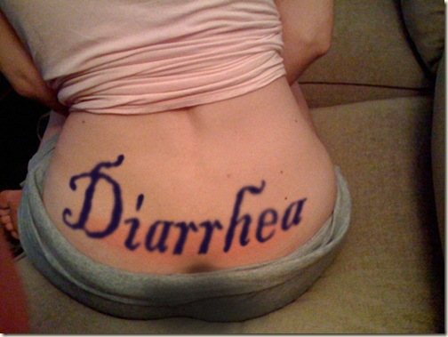

Martha Washington had a tramp stamp that said "Yo Mama"


Related posts

"I did not know that in 2005 they found his body..."
I did not know that in 2005 they found his body in a Connecticut field with his throat slit. Charles…

Stripper Branded with Diarrhea Tramp Stamp
Claritza was a young pretty stripper. She supported her family on the earnings she made in just a few nights…

Top 10 Signs That You Are a Hoarder
How do you know if you’re a hoarder? Here are the 10 telltale signs that indicate hoarding behavior. 1. If…

My Son, Still Eating That Corn
He loves his corn so much. Not sure why he has such a sad face about it. Corn is so…
Comments